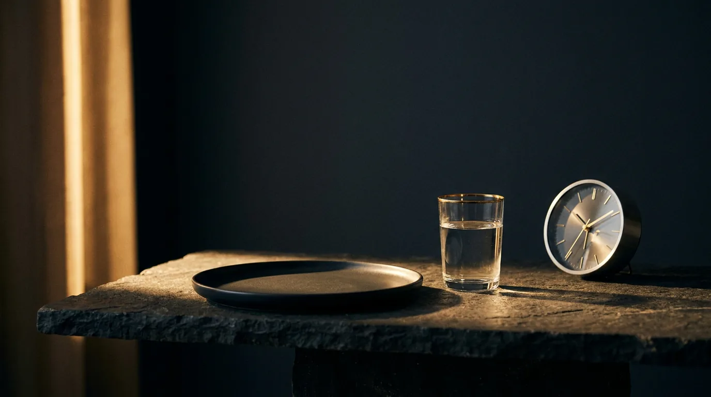

Fasten-Guide · Vertiefung zum Reel
Fasten, Stunde für Stunde.
Vom Aufbau in die Reinigung. Was in deinen Zellen abläuft.
Fasten ist kein Hungern, sondern ein Schalter. Kommt keine Nahrung, fährt dein Körper den Aufbau-Modus herunter und wechselt Schritt für Schritt in Fettverbrennung und Zellreinigung. Die Zeiten unten sind Richtwerte und verschieben sich je nach Person und letzter Mahlzeit.
Von Dr. Lara Vadlau · Longevity Medicine
